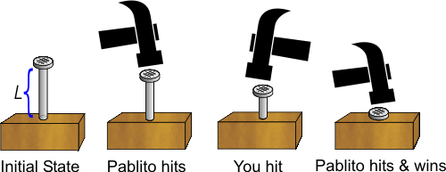

| Pablito nailed a nail |
Pablito will give you a birdie if you can beat him in his favorite game: nailing the nail. This game is a pretty mixture of intelligence and brute force. There is a long nail, a bit inserted into a piece of wood. You and Pablito hit the nail in turns with a hammer. The winner is the first player who completely inserts the nail.

All measures are given in integer numbers. Depending on his/her strength and ability, each player can push the nail between a minimum, Xmin, and a maximum quantity, Xmax. However, if the current length of the nail is less than Xmin, the player can insert the nail completely and win.
Let's name the players A and B. The optimal strategy for player A (similarly for B) is defined as follows:
Suppose player A always hits first, and both players use the optimal strategy for them. Who will win the game?
The first line of the input contains an integer N, indicating the number of test cases.
Each test case is described in a single line, containing 5 integers: L Amin Amax Bmin Bmax, indicating the initial length of the nail, the minimum hit of A, the maximum hit of A, the minimum hit of B, and the maximum hit of B, respectively. Assume all numbers are between 1 and 2^30, Amin ≤ Amax, and Bmin ≤ Bmax.
For each test case, the output should consist of a line with a single letter, A or B, indicating the winner in that case.
4 4 5 7 1 20 5 1 3 1 3 5 2 2 1 3 1000 1 3 1 3
A A B B